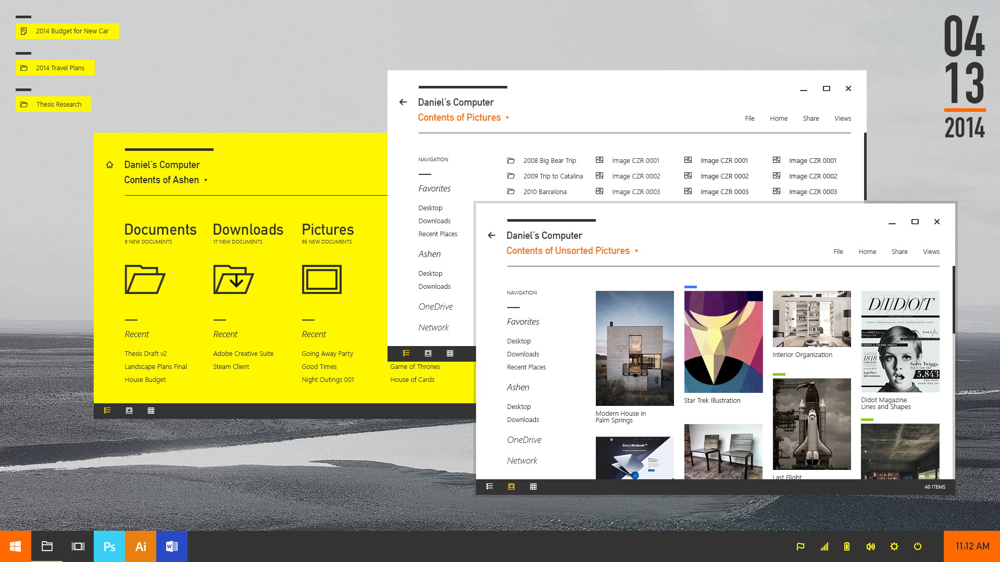

读取自《设计心理学》 | 唐纳德·A·诺曼 著
试想一下如果我们新买的一支电动牙刷，如果当我们拆开盒子后取出来准备使用时，既没找到启动开关，也没找到充电插口或是电池拆卸口。那么，你会不会有种迷茫，失望甚至是懊恼的情绪产生？
换个角度再想想，如果我们收到的是一个通用性更好的电动牙刷，结果会如何呢? 我们也许会感到掌控、满足甚至是骄傲。在我们刚描述的这个场景中，作为用户我们经历了两个阶段：对产品的认知（如何使用）+建立起对产品的情感（好不好用）。这里就意味着设计师在做交互设计时要注意到两个至关重要的元素—认知和情感 。
对一件产品的认知又可理解为是这件产品提现出来的可视性。比如我们如何安装，如何使用等。这种可视性又涉及到六种基本心理学概念 ：示能，意符，约束，映射 ，反馈以及概念模型。(接下来我们会先不涉及约束的内容)
示能的概念来自于J.J.Gibson，他起初是一位格式塔心理学家，后来发展处以他的名字命名的理论：吉布森心理学（Gibsonian psychology）。他认为世界中充着线索，而人们仅仅只需要根据本能的直观反映来处理面对的事物就可以了。
示能的体现，是由物质的品质以及与之交互的主体能力共同决定的。有形物品如何传达出人们与之互动的信息，这个相互关系被称之为示能。
我们可以看看红绿灯，从红绿灯本身来说，它的功能品质是向外界发散出三种不同颜色的灯光。而作为用户，我们的认知前提是我们已经理解并接受，红色是停止，绿色是通过，黄色是警告的颜色信息传达。也就是说红绿灯本身的品质和我们对颜色的认知能力共同构成了一种示能。
同时，还存在一个对立的概念—反示能。在正常情况下，示能和反示能都应该被揭示出来。比如玻璃门，在很多情况下玻璃门由于玻璃自身的特殊透明品质，会让很多人无法第一时间注意到，以至于会有很多人误打误撞的撞上去。这种抵制型的通过性就是玻璃门的反示能，做的好的地方，会将玻璃门上标识出警示标签，避免误撞上。
示能是一种相互关系，而意符则是点明操作的标识。从某种角度说，意符是一种线索，这种线索可以引导用户完成设计者对产品赋予的操作预期行为。
意符既可以是显性的也可以是隐性的。就拿亚马逊app的案例来说，显性的意符可以是轮播图/广告位下方的轮播点，提示用户这里有多张可翻阅的内容。
而隐性的意符可以参考苹果App Store里面的轮播图/广告位，他并不是通过直接告诉你一共有多少个内容，而是在边缘留出一部分其他的广告图内容，以示意还可以继续往右进行滑动查看。
在设计中，意符比示能更重要，因为他们起到沟通作用，告知用户如何使用这款设计。一个意符可以使词语、图形化的插图，或仅仅只是预设用途明确的一个装置。大多数情况下，设计师可以专注于意符的设计。
映射是表示两组事物要素之间的关系。比如汽车都有座椅调节功能，那么座椅的调节按钮与座椅就形成了一组映射，这组映射中决定了哪个按钮具体调节哪一项座椅部件。
反馈是用户阶段性行为的结果告知。反馈必须是即时的，一旦稍有延迟就会令人产生不安，如果拖延太久，人们经常会放弃，而选择其他的行为活动。
试想一下，如果你在app上在线刚付完款，付款完成后没有任何反馈就直接回到初始页面。这会让我们感到非常迷惑和不安，同时也是极其不友好的体验流程。
同时，糟糕的反馈可能比没有反馈更差劲，因为它分散了注意力，不能提供详细信息，并且常常刺激和引发焦虑。过多的反馈也有可能比过少的反馈更恼人。反馈十分必要，但必须正确的，合理的使用。
概念模型通常是高度简化的说明，告诉你事物是如何工作的。概念模型只要有用就行，不必完整或准确。在电脑屏幕上显示的文件、文件夹和图标们可以帮助人们建立一些概念模型。

如果拥有一个正确的概念模型，我们的日常生活会轻松得多。